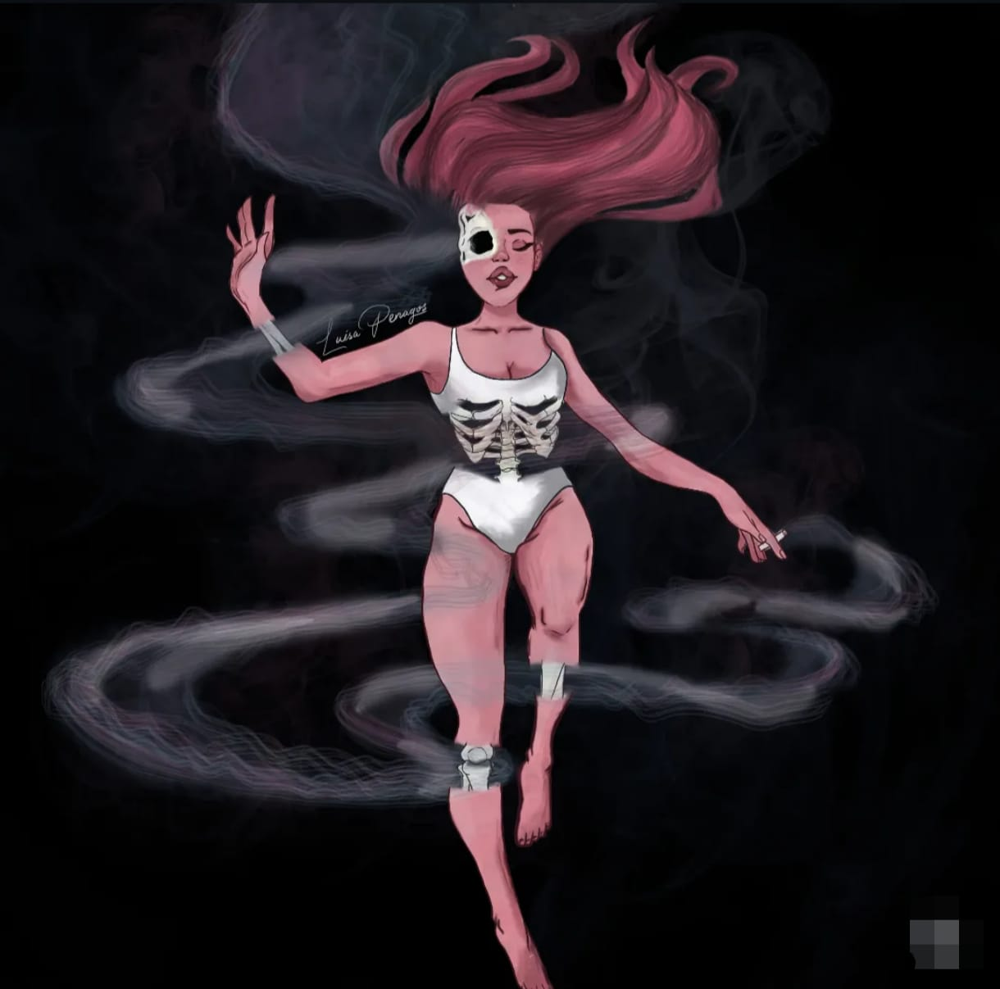
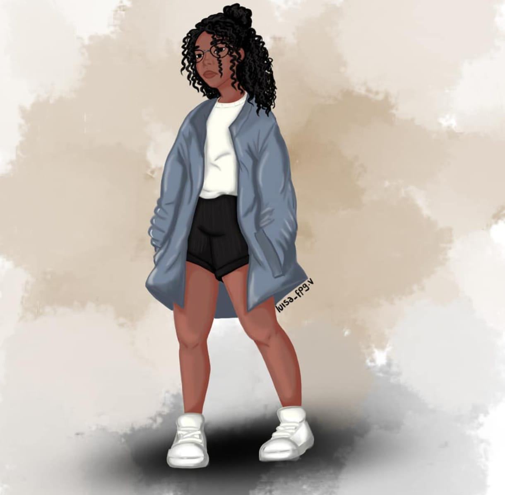
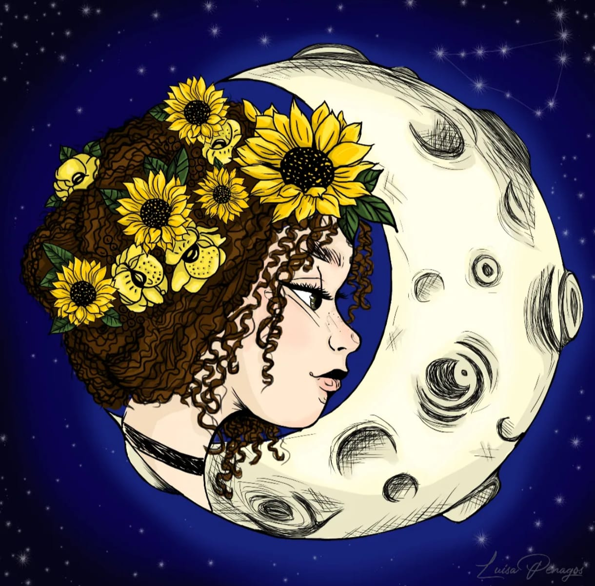
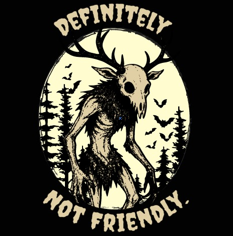
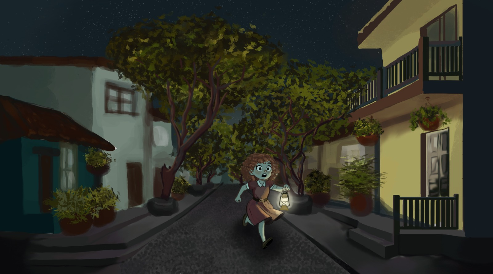
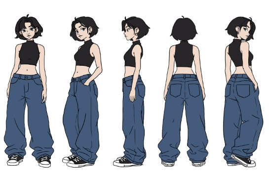
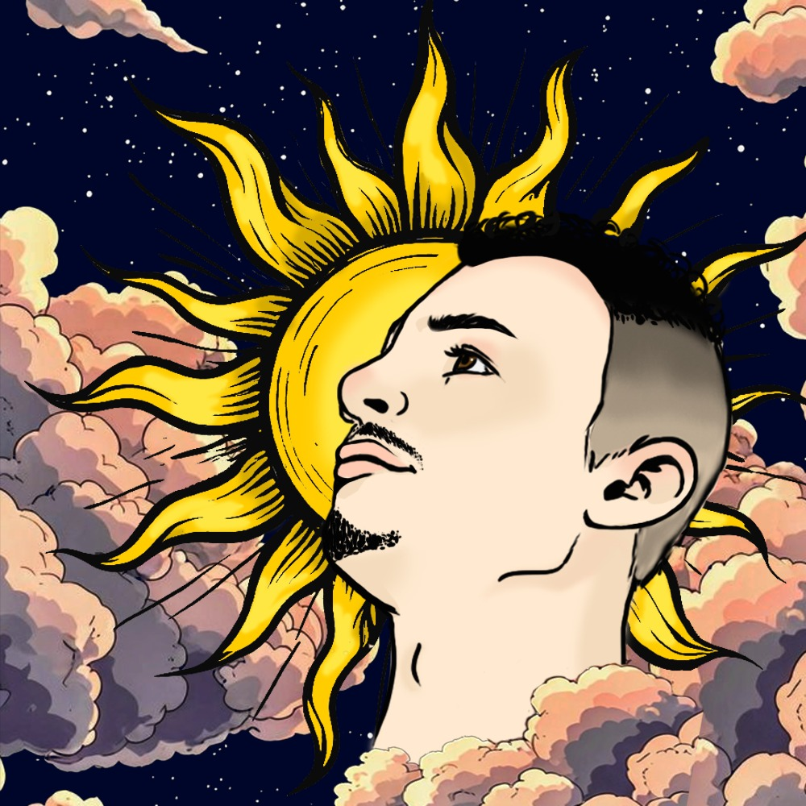
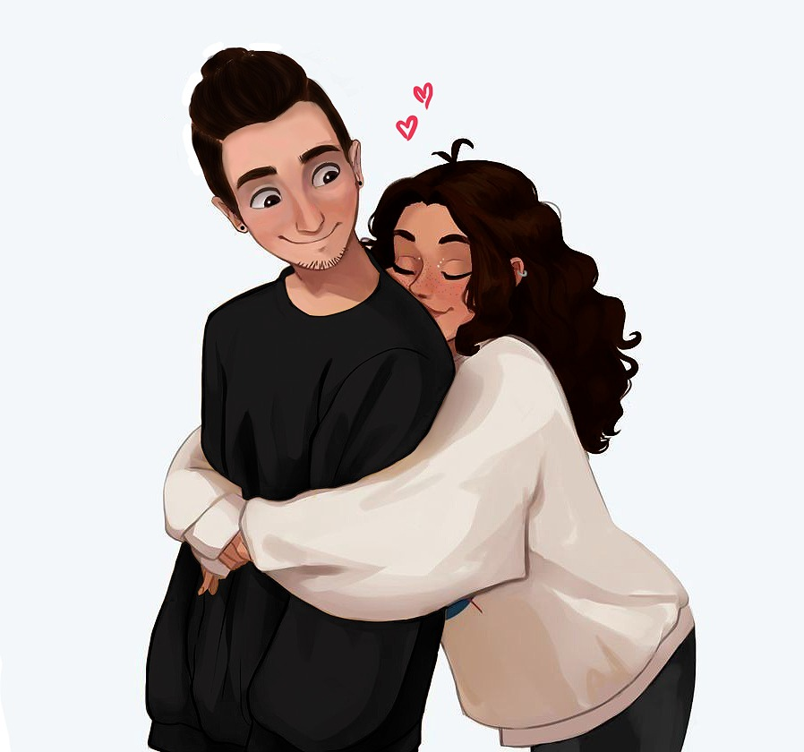

Objetivo
Experimentar con diferentes recursos y estilos de ilustración para fortalecer la expresión visual, desarrollar una identidad gráfica y explorar nuevas formas de representar conceptos, historias y personajes.

Selección de proyectos y ejercicios de ilustración que exploran la imagen como recurso narrativo y expresivo. Mediante el desarrollo de personajes, formas, texturas y composición, cada pieza construye un lenguaje visual propio y comunica ideas a través de la representación gráfica.
Experimentar con diferentes recursos y estilos de ilustración para fortalecer la expresión visual, desarrollar una identidad gráfica y explorar nuevas formas de representar conceptos, historias y personajes.
Desarrollo de piezas ilustradas con enfoques y estilos diversos, fortaleciendo habilidades de dibujo, construcción visual, composición y exploración de técnicas digitales y tradicionales.
Ocho piezas que exploran personaje, atmósfera, textura y composición.






